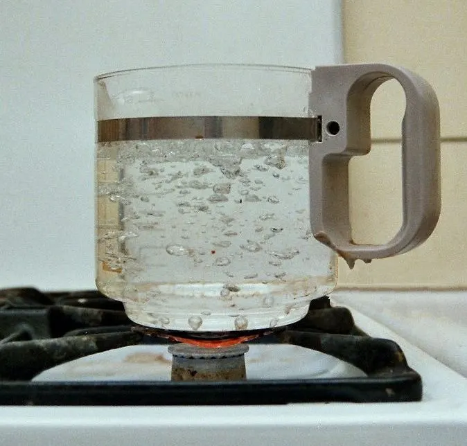
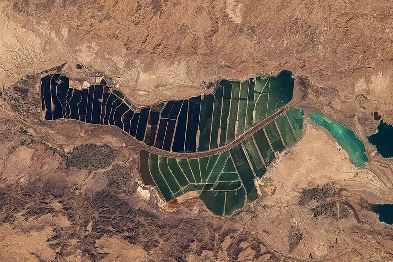
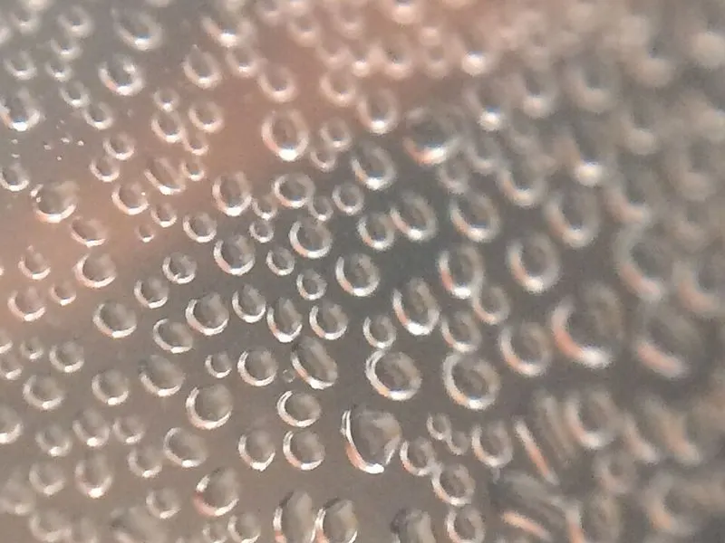

Cambridge Primary Checkpoint · Science 0097 · Stage 6 · Chemistry
Boiling and Evaporation
Both boiling and evaporation turn a liquid into a gas — learn exactly how they differ, what the particles are doing, how to read heating graphs and how to plan evaporation investigations.
British & IGCSE › Checkpoint 6 › Checkpoint 6 Science — Complete Course
- Describe the differences between boiling and evaporation: where the liquid changes to gas, at what temperature, how fast, and what you can see. (6Cc.03)
1. Key words
| Word / phrase | Meaning / use |
|---|---|
| evaporation | التبخر — a liquid slowly changing into a gas at its surface, at any temperature |
| boiling | الغليان — a liquid changing into a gas all through the liquid, with bubbles, at one fixed temperature |
| boiling point | درجة الغليان — the temperature at which a liquid boils (water: 100 °C) |
| water vapour | بخار الماء — water as a gas; it is invisible |
| condensation | التكثف — a gas cooling and changing back into a liquid |
| surface | السطح — the top of the liquid, where it touches the air |
| surface area | مساحة السطح — how much of the liquid's surface touches the air |
| thermometer | الترمومتر — the instrument used to measure temperature in °C |
2. What is the same?
Boiling and evaporation are both changes of state from liquid → gas. Both are physical, reversible changes: no new substance is made, and the gas can be cooled so it condenses back into the liquid. When water boils or evaporates it becomes water vapour.
3. The differences
| Evaporation | Boiling | |
|---|---|---|
| Where does the liquid change to gas? | only at the surface | all through the liquid (bubbles form inside it) |
| What temperature? | any temperature (below the boiling point) | only at the boiling point (water: 100 °C) |
| How fast? | slow | fast |
| Can you see bubbles? | no | yes — big bubbles rise and burst at the top |
| Does it need heat to be supplied? | no — puddles dry without a cooker | yes — heat must keep being supplied |
| Everyday examples | puddles drying, wet clothes drying, sweat drying | a kettle, a pan of water cooking pasta |

Evaporation: surface – any temperature – slow. Boiling: everywhere – boiling point – fast. A 2-mark "describe two differences" question needs one pair of opposites for each mark, e.g. "evaporation happens only at the surface but boiling happens throughout the liquid".
4. The particle model
- In a liquid, the particles touch and slide past each other. They do not all move at the same speed.
- Evaporation: some of the fastest particles at the surface have enough energy to break away from the liquid and escape into the air as gas. Only surface particles can escape, so evaporation is slow.
- Boiling: when the liquid is heated to its boiling point, particles all through the liquid have enough energy to become gas. Pockets of gas form inside the liquid — these are the bubbles. This is much faster.
- The bubbles in boiling water are full of water vapour, not air.
- The white "steam" you see above a kettle is not the gas itself. Water vapour is invisible; the white cloud is tiny drops of liquid water made when the vapour cools and condenses in the air.
5. Heating water until it boils
If you heat water and take its temperature every minute, the temperature rises until it reaches 100 °C. Then the water boils and, even though you keep heating, the temperature stays at 100 °C. The energy is used to change the liquid into gas, not to make it hotter.
Boiling point is a property of a substance. Pure water always boils at 100 °C (at normal air pressure). Other liquids have different boiling points — for example, ethanol (a type of alcohol) boils at about 78 °C. So scientists can use the boiling point to help identify a liquid.
When you start heating cold water, tiny bubbles appear on the bottom of the pan long before 100 °C. These are bubbles of air that was dissolved in the water. Fizzy drinks also bubble without boiling. Boiling means big bubbles of the liquid's own gas forming throughout the liquid at its boiling point.
6. What makes evaporation faster?
| Factor | Faster evaporation when… | Example |
|---|---|---|
| Temperature | the liquid and air are warmer | washing dries faster on a hot summer day in Cairo than in winter |
| Surface area | the liquid is spread out (larger surface) | a puddle dries faster than a deep bucket of water |
| Moving air (wind) | air is moving over the surface | hair dries faster with a hair dryer or a fan |
| Dampness of the air | the air is dry, not damp/humid | clothes dry slowly in a steamy bathroom |
Useful evaporation: salt is made from seawater by letting the sun evaporate water from wide, shallow ponds — wide ponds give a large surface area. Evaporation also cools us: when sweat evaporates from our skin it takes heat away from the body.

7. Evaporation and condensation working together
Evaporation is reversed by condensation. When water vapour touches something cold, it cools down and turns back into liquid water. You see this every day:
- Drops of water form on the outside of a cold bottle taken from the fridge — water vapour from the air condenses on the cold glass.
- A bathroom mirror mists up after a hot shower.
- In the water cycle, the Sun's heat evaporates water from seas, rivers and the Nile; high in the sky the vapour cools and condenses into tiny drops that make clouds, and then falls as rain.
- A solar still uses the Sun to evaporate salty water; the vapour condenses on a cool plastic cover and drips into a cup as clean water — the salt is left behind.

Exam link: if a question asks how to collect the water (not just the salt) from salt water, you must mention both steps — evaporate the water, then condense the water vapour by cooling it.
التبخر (evaporation) يحدث من السطح فقط، عند أي درجة حرارة، وببطء، وبدون فقاعات — مثل جفاف الغسيل. الغليان (boiling) يحدث في كل السائل، عند درجة الغليان فقط (الماء 100 درجة)، وبسرعة، ومع فقاعات — مثل الكاتل. وأثناء الغليان تظل درجة الحرارة ثابتة رغم استمرار التسخين.
8. Worked examples
Worked example 1 — Complete the sentences about boiling and evaporation. [3 marks] (a) Evaporation happens only at the ______ of a liquid. (b) Water boils at ______ °C. (c) Boiling is ______ than evaporation.
- (a) surface (b) 100 (c) faster (or quicker).
- Common mistake: writing "evaporation happens at 100 °C". Evaporation happens at any temperature — that is why a puddle dries at 25 °C.
Worked example 2 — Use the heating graph in section 5. (a) What was the temperature after 4 minutes? [1] (b) After how many minutes did the water start to boil? [1] (c) Describe and explain what happens to the temperature from 8 to 14 minutes. [2]
- (a) Go up from 4 minutes to the line, then across: 60 °C. (The temperature rises 80 °C in 8 minutes, so 10 °C every minute: 20 + 4 × 10 = 60.)
- (b) The line becomes flat at 8 minutes, when the temperature reaches 100 °C.
- (c) The temperature stays the same at 100 °C (1) because the water is boiling — the heat is used to change the water into gas (water vapour), not to raise the temperature (1).
Worked example 3 — On a hot, windy day a puddle dries in two hours. On a cool, still day the same puddle takes all day. Give two reasons why. [2 marks]
- The higher temperature makes the water evaporate faster (1).
- The wind moves the water vapour away from the surface, so evaporation is faster (1).
- Common mistake: saying "the puddle boils in the sun". The water never reaches 100 °C; it evaporates.
Worked example 4 — Boiling or evaporation? Write B or E for each. [2 marks] (a) Ink drying on paper. (b) Soup bubbling in a pan on a hot cooker. (c) A wet floor drying after mopping. (d) Ethanol heated to 78 °C making big bubbles.
- (a) E — slow, at room temperature, from the surface.
- (b) B — bubbles throughout, being heated.
- (c) E — the floor is not heated to 100 °C.
- (d) B — 78 °C is the boiling point of ethanol, and there are bubbles throughout.
- (2 marks for all four correct; 1 mark for two or three correct.)
Worked example 5 — Mariam wants to find out if wind affects how fast water evaporates. She has two saucers of water and a fan. Describe a fair test. [3 marks]
- Put the same volume of water (e.g. 20 ml) in two identical saucers, in the same room (same temperature) (1).
- Put a fan blowing over one saucer only; the other has no fan. Change only the wind (1).
- After the same time (e.g. 3 hours), measure the volume of water left in each with a measuring cylinder; the one with less water left evaporated faster (1).
- Prediction with a reason: the saucer with the fan will lose more water, because moving air carries the water vapour away from the surface.
- "Evaporation only happens when water is heated." — No: it happens at any temperature.
- "Water evaporates at 100 °C." — At 100 °C water boils; evaporation happens below that too.
- "The bubbles in boiling water are air (or oxygen)." — They are water vapour.
- "The temperature keeps rising while water boils." — It stays at the boiling point.
- "Steam is the white cloud." — The white cloud is tiny liquid droplets; real water vapour is invisible.
- Giving only one side of a difference: "boiling is fast" alone may not score; write "boiling is fast but evaporation is slow".
- Describe a difference — write a comparison sentence with both words: "Boiling …, but evaporation …".
- Read a thermometer — find what one small division is worth (often 1 °C or 2 °C) before reading.
- Heating graphs — read values from the line; the flat part means the liquid is boiling (or changing state).
- Evaporation investigations — independent variable (surface area / temperature / wind), dependent variable (volume of water left or lost), control variables (starting volume, time, place).
- Calculations — water evaporated = starting volume − volume left. Always give the unit (ml).
- Everyday contexts — drying clothes, puddles, making salt, kettles and cooking.
Practice
- Boiling and evaporation both change a liquid into a gas; both are reversible by condensing.
- Evaporation: at the surface only, at any temperature, slow, no bubbles.
- Boiling: throughout the liquid, only at the boiling point (water 100 °C), fast, bubbles of vapour.
- While a liquid boils its temperature stays the same; boiling point is a property of the substance.
- Evaporation is faster when it is warmer, windier, drier and the surface area is larger.
All pages in this course
Start here
- Checkpoint 6 Science: The Test and How to Prepare
- Thinking and Working Scientifically: Investigations, Variables, Tables and Graphs
Biology
- The Heart and Circulatory System
- The Lungs and Respiratory System
- Human Reproductive System and Puberty
- Diseases, Hygiene and the Body's Defences
- Food Chains, Food Webs, Energy and Toxins
Chemistry
- Properties of Substances: Melting and Boiling Points, Gases, Conductors
- Reversible Changes and Dissolving
- Boiling and Evaporation
- Chemical Reactions: Reactants, Products and Evidence
Physics
- Mass, Weight and Gravity
- Force Diagrams and Forces on Moving Objects
- Floating and Sinking
- Light: Reflection and Refraction
- Electric Circuits, Symbols, Series and Parallel
Earth and space
Practice tests